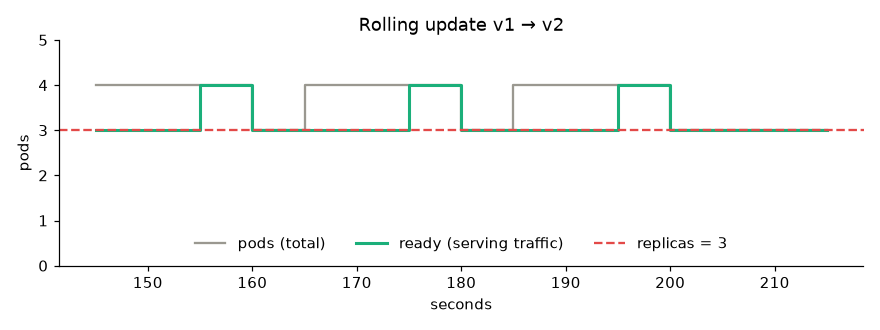
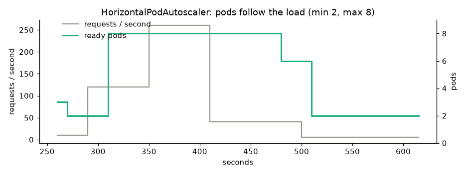
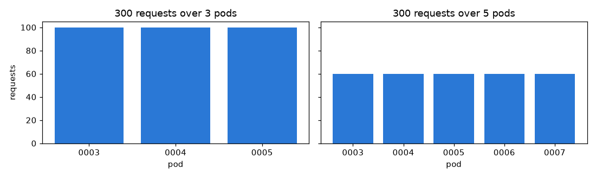

Docker packages one container; Kubernetes runs many of them across a cluster of machines and keeps them alive. The instructor covers what it is (open source, from Google, 2014), its four selling points — load balancing, scaling, storage and self-healing — and then deploys a Flask model app to Google Kubernetes Engine: build the image, push it to Google's registry, create a cluster, kubectl create deployment, expose it with a LoadBalancer, open the external IP, and delete everything afterwards.
The instructor's definition: a powerful open-source system, developed by Google and released in 2014, for managing containerised applications. In plainer words: a system for running and coordinating containers across a cluster of machines, which manages the whole lifecycle of those containers.
One Docker image, started by hand or by a CI job with docker run on a single EC2 machine. If that container dies, or the machine dies, or traffic doubles, you fix it.
You declare "I want 3 copies of this image, reachable on port 80". The cluster keeps that true: restarting containers, replacing them, spreading traffic and adding copies when load rises.
Kubernetes is declarative. You describe the desired state; controllers constantly compare it with the real state and act on the difference. You never say "start a container" — you say "three should exist", and something else works out how.
Kubernetes is often written K8s ("k", eight letters, "s"). The name is Greek for helmsman, which is where the ship's-wheel logo comes from. It was donated to the Cloud Native Computing Foundation in 2015.
The video lists four benefits. Each is real, but each needs something in your configuration before it works:
| Feature (from the video) | What it means | What you must provide |
|---|---|---|
| Load balancing "automatically distributes the load between the containers" | A Service gives the pods one address and spreads connections across them. | A Service, and more than one replica. With a single pod there is nothing to balance. |
| Scaling "scale up or down at peak hours, weekends and holidays" | Add or remove pods as demand changes. | A HorizontalPodAutoscaler plus CPU requests in the pod spec. Without an HPA, the replica count never changes on its own. |
| Storage "keep storage consistent with multiple instances" | Disks that outlive a pod, and can be shared or mounted per replica. | A PersistentVolumeClaim (and a StatefulSet for per-replica disks). Containers are otherwise wiped clean on every restart. |
| Self-healing "restarts containers that fail, kills ones that don't respond to health checks" | Crashed pods come back; unhealthy containers are restarted; pods on a dead node are recreated elsewhere. | A Deployment (so a ReplicaSet is counting) and liveness / readiness probes. Without probes, a hung-but-alive process is left running. |
The video says you don't have to worry about load balancing or scaling because Kubernetes handles it. What it really gives you is the machinery. A plain kubectl create deployment, as in the demo, has one replica, no probes, no resource requests and no autoscaler, so none of the four features is actually doing anything yet. The manifests in the hands-on project fill all of that in.
| Object | What it is | In our project |
|---|---|---|
| Pod | the smallest unit: one or more containers that share an IP and lifetime. Pods are disposable and are never edited by hand. | one sentiment-API container |
| ReplicaSet | keeps exactly N copies of a pod template alive. You rarely create one directly. | created by the Deployment; one per version |
| Deployment | manages ReplicaSets so updates are gradual and reversible (rollout undo). | 10-deployment.yaml, 3 replicas |
| Service | a stable name, IP and load balancer for a set of pods (ClusterIP internal, NodePort, LoadBalancer external). | 20-service.yaml, type LoadBalancer, 80 → 8080 |
| Ingress / Gateway | HTTP routing by host and path, plus TLS, in front of several Services. | not used; one LoadBalancer per app is fine to start |
| ConfigMap / Secret | configuration and credentials injected as environment variables or files. | where the MLflow URI or an API key would go |
| PersistentVolumeClaim | a request for a disk that survives pod restarts. | not needed: the model is baked into the image |
| HorizontalPodAutoscaler | changes a Deployment's replica count from metrics. | 30-hpa.yaml, CPU 60%, 2–8 pods |
| Namespace | a folder for objects, with its own quotas and access rules. | mlops |
| Job / CronJob | run-to-completion work, once or on a schedule. | where nightly retraining would live |
You apply a Deployment asking for 3 replicas of api:v2:
Kill a pod and the same loop replaces it within seconds. That's all "self-healing" is.
The instructor uses Google Cloud here, not AWS, because GKE makes a cluster easy and "a local Kubernetes on Windows causes lots of setup issues and takes a lot of space". A new Google Cloud account gets $300 in free credit, which is plenty for this.
The app is a ready-made PyCaret example: a Flask page that predicts medical insurance charges from age, sex, BMI, children, smoker and region — a regression model, with templates/, static/, a training notebook, a saved model and a Dockerfile. Any containerised app would do.
Enable the services: search for Container Registry and enable it (this is where images go, "like Docker Hub"), then Kubernetes Engine and enable that too.
Open Cloud Shell from the console (a free Linux terminal with gcloud, docker and kubectl already installed), and check you're in the right project.
Clone and set the project id:
git clone <the app repo> && cd <repo>
export PROJECT_ID=<your-project-id> # shown in the console headerBuild the image, tagged so it can be pushed to Google's registry:
docker build -t gcr.io/$PROJECT_ID/insurance-app:v1 .This failed twice in the video, and the fixes are worth remembering: the Dockerfile's Python 3.7 base was too old for the requirements (changed to 3.9), and a pinned PyCaret version no longer installs (the pin was removed). "Old packages get deprecated — take care of that when you build the image."
Push it:
gcloud auth configure-docker gcr.io # let docker log in to the registry
docker push gcr.io/$PROJECT_ID/insurance-app:v1
docker images # check it locallyThe image then appears in Container Registry.
Create the cluster (console or CLI). In the console: name it, pick a region (us-central1), choose the Standard tier rather than Enterprise, and create. It takes about 5 minutes until the status turns green.
gcloud config set compute/zone us-central1
gcloud container clusters create ml-cluster --num-nodes=1 # more nodes = more costDeploy and expose:
kubectl create deployment insurance-app --image=gcr.io/$PROJECT_ID/insurance-app:v1
kubectl expose deployment insurance-app --type=LoadBalancer --port 80 --target-port 8080
kubectl get service # wait for EXTERNAL-IPThe app listens on 8080 inside the container; the Service publishes it on port 80. Open http://<external-ip>, fill in the form, click Predict, and the model answers. "Now load balancing and scaling are handled automatically."
Delete everything 10:44:36: select the cluster → Delete → type its name to confirm; then delete the image from the registry. "Make sure you delete it if you're not using it, otherwise it will charge you."
kubectl create deployment is fine for a demo, but the version you keep is a file. Click any line of our Chapter 17 API deployment:
Apply it with kubectl apply -f manifests/, and review changes to it in git like any other code. This is what "GitOps" means: the repo is the desired state.
Two nodes, three replicas, a Service in front. Break things and watch the controllers repair them. (A simplified model of the real loops — the same one the hands-on notebook runs in Python.)

maxUnavailable: 0. The total climbs to 4 (the surge pod), and ready never dips below 3 — no request is dropped. Compare that with Chapter 18's deploy script, which stops the old container before starting the new one.

For interviews, that trade-off matters more than the commands: Kubernetes is the general answer, and the managed services are the pragmatic one for a single model.
gcr.io) is deprecated. Google has moved to Artifact Registry (<region>-docker.pkg.dev/<project>/<repo>/<image>), which the instructor briefly calls it by name. New projects should push there; gcloud auth configure-docker <region>-docker.pkg.dev.kubectl create deployment and kubectl expose leave no record of what the cluster should look like. Keep manifests in git and kubectl apply -f; you also get diffs, reviews and rollbacks.:v1 by hand. Tag images with the commit SHA (as Chapter 18's workflow does) so you can tell what's running and roll back precisely.--num-nodes=1 is fine for a demo, but a node upgrade or failure then takes the app down. Use at least 2–3 nodes across zones, plus a PodDisruptionBudget.runAsNonRoot, drop capabilities, add a read-only root filesystem and resource limits, and use Workload Identity instead of service-account keys. Our manifest does all of these.projects/ch21_kubernetes/
├── manifests/ # the Chapter 17 API, as real Kubernetes objects
│ ├── 00-namespace.yaml · 10-deployment.yaml · 20-service.yaml
│ └── 30-hpa.yaml · 40-pdb.yaml
├── toy_k8s.py # ~300 lines: the control loops made visible
└── kubernetes_walkthrough.ipynb
projects/_tools/bin/kubeconform # manifest validator (prebuilt binary)Not run here (it's on your after-course to-do list): a real cluster. The free way is minikube on this Mac, where the same kubectl apply -f manifests/ works; the paid way is the video's GKE path.
Docker builds and runs a container on one machine. Kubernetes runs many containers across many machines and keeps them in the state you asked for: scheduling them onto nodes, restarting failures, replacing pods when a node dies, rolling out new versions gradually, load-balancing traffic, scaling on demand, and managing config, secrets and storage. Docker is the packaging; Kubernetes is the operations.
A Pod is one running instance (one or more containers sharing a network namespace). A ReplicaSet keeps a fixed number of identical pods alive. A Deployment manages ReplicaSets over time: on an update it creates a new one and shifts pods over gradually, keeping the old one around so kubectl rollout undo works. You write the Deployment; the other two are created for you.
A common mistake is a liveness probe that's too aggressive on a slow-loading model server, which puts it in a restart loop.
Client → cloud load balancer (for a type: LoadBalancer Service) or Ingress → a node → kube-proxy's rules (iptables or IPVS) → one of the Service's endpoints, which are the ready pods matching its label selector → the container's targetPort. Inside the cluster, other pods just use the DNS name service.namespace.svc.cluster.local.
Changing the pod template creates a new ReplicaSet. The Deployment scales it up and the old one down, respecting maxSurge (extra pods allowed) and maxUnavailable (how many may be missing). With maxUnavailable: 0 a new pod must become ready before an old one goes. If new pods never become ready, the rollout stalls at the progress deadline and the old version keeps serving. kubectl rollout undo goes back to the previous revision (kept up to revisionHistoryLimit).
Requests are what the scheduler reserves and what the HPA measures utilisation against; limits are the ceiling (over the memory limit the container is OOMKilled; over the CPU limit it's throttled). No requests means no sensible scheduling and no CPU-based autoscaling. The HPA scales pods; the Cluster Autoscaler adds nodes when pods can't be placed; VPA tunes the requests themselves.
kubectl describe pod shows the scheduler's reason.imagePullSecrets, or Workload Identity).kubectl logs --previous; often a missing env var, a missing file, or a too-strict liveness probe.Simplest: containerise the API (Chapter 17), keep the model in the image or pull it from a registry or bucket at startup, then Deployment + Service + HPA + probes, as in our manifests. At larger scale, use a serving layer such as KServe or Seldon for canary traffic splitting, autoscaling to zero and standard inference protocols; schedule GPUs with node selectors and resource limits; run pipelines with Kubeflow or Argo; and keep the model registry (MLflow) as the source of truth for which version is deployed.
API server (the only entry point, with auth and validation), etcd (the state store), scheduler (assigns pods to nodes) and controller manager (the reconciliation loops), plus a cloud controller for load balancers and disks. Each node runs a kubelet (starts containers, runs probes), kube-proxy (service networking) and a container runtime such as containerd. Managed services (GKE, EKS, AKS) run the control plane for you.
export PROJECT_ID → docker build -t gcr.io/$PROJECT_ID/insurance-app:v1 . → gcloud auth configure-docker → docker push → create a cluster (about 5 min) → kubectl create deployment → kubectl expose --type=LoadBalancer --port 80 --target-port 8080 → open the external IP → predict.